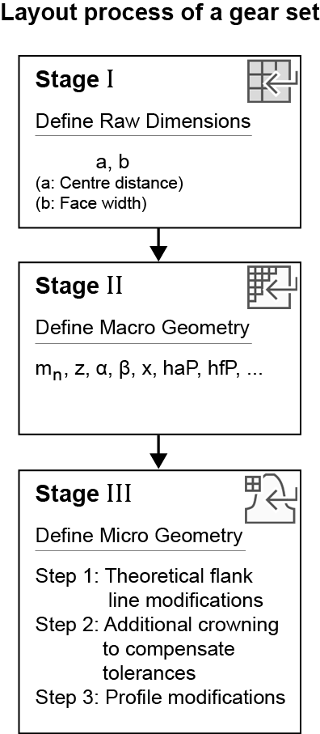
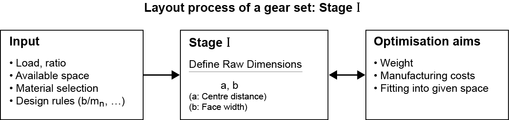

|
|
|


粗略选型：宏观几何
KISSsoft 具有非常强大的选型功能，本节及后续章节将对此进行介绍。
对一个齿轮级进行选型的过程，从开始到结束，包括粗略选型宏观几何、精细选型宏观几何，最后是精细选型修形（微观几何）。

图 15.94：齿轮选型所涉及的各个阶段
粗略选型根据输入的传动比和载荷数据，提出可能的齿轮齿形配置。粗略选型的目的是确定合适方案的可能范围，这些方案都按照指定的扭矩并根据所有指定的要求安全系数进行尺寸计算。总重量可能是最重要的输出，因为可以认为它与制造成本大致成比例。不同方案的重量通常相差高达 3 倍！

图 15.95：齿轮选型，第 1 阶段
要调用粗略选型功能，请转到 菜单并选择 选项，或者点击工具栏中的 图标。
目前，您可以将其应用于带内齿或外齿的圆柱齿轮副以及行星齿轮。名义传动比是最重要的输入参数。对于内齿轮副，传动比必须在 区域中输入为负值。对于行星齿轮级，名义传动比必须 > 2.0。
运行数据（功率、转速等）取自 KISSsoft 主窗口（如有需要可在那里更改）。您还可以指定
螺旋角或所需的纵向重合度（例如 εβ= 1.0）。
可以设置齿轮级的一些重要设计参数（比值 b/mn、B/d1 和 b/a）。在粗略选型过程中，始终会考虑这三个参数。由于这些参数可能会相互制约，您可以通过选择相应的按钮来指定优先考虑哪个参数。
齿宽与法向模数之比是一个特性值，用于使齿轮级获得合理的尺寸。如果相关齿轮过窄，则无法保证轮齿的轴向刚度。因此，b/mn 应大于 6（参见 Niemann，表 22.1/7 [7]）。
如果齿轮过宽，则必须使载荷在整个齿宽上均匀分布。根据齿轮类型和精度等级，b/mn 应小于 15...40（参见 Niemann，表 22.1/10 [7]）。
齿宽与分度圆直径之比是一个特性值，用于使齿轮级获得合理的尺寸。根据所涉及的热处理类型，该比值应小于 0.8 到 1.6（参见 Niemann，表 22.1/5 [7]）。
齿宽与中心距之比是一个特性值，用于设计模块化结构的标准齿轮装置。根据箱体的刚度，该值应小于 0.3 到 0.5（参见 Niemann，表 22.1/6 [7]）。
点击 按钮，会显示一个建议值列表，您可以利用这些值来设置齿轮的参数。
结果表中的参数以公式符号显示，这些符号与界面其余部分以及报告中所用的公式符号一致。将鼠标指针悬停在表中的公式符号上，可以纯文本形式显示其说明。右键点击结果表可打开一个对话框，您可以在其中隐藏或显示其他参数。
粗略选型会根据所选的强度计算标准，自动为所需的功率和传动比找出最重要的轮齿参数（中心距、模数、齿数、宽度）。尺寸计算按照预定义的最小安全系数进行（参见"安全系数"章）。
要指定比值 b/mn-、b/a、b/d 的区间，请选择 菜单选项（位于 菜单中）。（参见"选型"章）
程序会显示多个可供您选择的不同方案。然后，您可以使用这些方案在精细选型中执行优化。窗口保持打开状态，以便您选择更多方案。有关精细选型的更多详细信息，请参见 精细选型：宏观几何 节。
这一选型过程最重要的结果是，它使您能够确定可实现的中心距范围和模数范围，以及齿宽。然后，您可以决定齿轮装置本身需要占用多少空间。
如果选择 DIN 3990 计算方法，则使用 DIN 780 系列 I 和 II 中规定的标准模数。如果选择按照 AGMA 的计算方法并将模数输入为 "径节"，则会将 ISO 54 的模数系列换算为径节后再应用。对于所有其他计算方法，使用 ISO 54 系列 I 和 II 中规定的模数系列。由于 ISO 54 系列 I 和 II 只包含到标准模数 m =1，因此对于 m < 1 的情况，该标准模数系列通过加入 DIN 780 的值进行了扩展。
编号 1 到 5 的方案采用任意模数；从编号 6 开始的方案采用 DIN 780（齿轮模数系列）规定的标准化模数。
- 编号 1：传动比最精确的方案
- 编号 2：中心距最大的方案
- 编号 3：中心距最小的方案
- 编号 4：模数最大的方案
- 编号 5：模数最小的方案
对于特殊情况，您可以固定中心距。但是，在这些情况下，您必须记住程序的选型选项并非详尽无遗，精细选型是更好的替代方案。
行星齿轮的强度选型
对行星齿轮级进行粗略选型时，假定齿圈是静止的。如果齿圈旋转，则必须在选型后更改转速。
- 根据 Niemann 提出的齿数建议
根据 Niemann [7] 表 22.1/8 的小齿轮标准齿数表。
| 传动比 u | 1 | 2 | 4 | 8 |
| 整体淬硬或淬硬 | ||||
| 配对件整体淬硬至 230 HB | 32..60 | 29..55 | 25..50 | 22..45 |
| 超过 300 HB | 30..50 | 27..45 | 23..40 | 20..35 |
| 铸铁 | 26..45 | 23..40 | 21..35 | 18..30 |
| 渗氮 | 24..40 | 21..35 | 19..31 | 16..26 |
| 表面硬化 | 21..32 | 19..29 | 16..25 | 14..22 |
点击选型按钮，可自动从程序传输这些值。
Rough sizing macrogeometry
KISSsoft has very powerful sizing functions, which are described in this section and those that follow.
The process for sizing a gear stage, from start to end, involves rough sizing macrogeometry, fine sizing macrogeometry and, finally, fine sizing modifications (microgeometry).
Figure 15.94: Phases involved in sizing gears
Rough sizing proposes possible gear teeth configurations based on the data entered for the ratio and the load. The purpose of rough sizing is to ascertain the possible range of suitable solutions, all sized for the specified torque, according to all the specified required safeties. The total weight is possibly the most important output, because this can be regarded as roughly proportional to the manufacturing cost. The weight of the different solutions usually varies by a factor of up to 3!
Figure 15.95: Gear sizing, Phase 1
To call the rough sizing function, either go to the menu and select the option or click on the icon in the Tool bar.
At present, you can apply this to cylindrical gear pairs with internal or external teeth, and to planetary gears. The nominal ratio is the most important input parameter. For an internal gear pair, the ratio must be entered as a negative value in the area. For planetary stages the nominal ratio must be > 2.0.
The operating data (power, speed, etc.) is taken from the KISSsoft main window (and can be changed there if required). You can also specify
a helix angle or a required overlap ratio (e.g. εβ= 1.0).
Some important design parameters for gear stages can be set (ratios b/mn, B/d1 and b/a). All three parameters are always taken into account during rough sizing. Since these parameters may restrict each other, you can specify which parameter is to be prioritized by selecting the appropriate button.
The facewidth to normal module ratio is a characteristic value used to achieve reasonable dimensions for gear stages. If the gears involved are too narrow, the axial stiffness of the teeth cannot be guaranteed. For this reason, b/mn should be greater than 6 (see Niemann, Table 22.1/7 [7]).
If the gears are too wide, it is essential that the load is spread evenly across the entire facewidth. Depending on the gear type and accuracy grade, b/mn should be less than 15...40 (see Niemann, Table 22.1/10 [7]).
The facewidth to reference diameter ratio is a characteristic value used to achieve sensible dimensions for gear stages. Depending on what type of heat treatment is involved, this ratio should be less than 0.8 to 1.6 (see Niemann, Table 22.1/5 [7]).
The facewidth to center distance ratio is a characteristic value used to design standard gear units of modular construction. Depending on the stiffness of the housing, this value should be smaller than 0.3 to 0.5 (see Niemann, Table 22.1/6 [7]).
Click on the button to display a list of suggested values that you can use to set the parameters for your gears.
The parameters in the results table are displayed with formula symbols which match the formula symbols used in the rest of the interface, and in the reports. Hover the mouse pointer over a formula symbol in the table to display a description of it in plain text. Right-click on the results table to open a dialog, in which you can either hide or display additional parameters.
Rough sizing automatically finds the most important tooth parameters (center distance, module, number of teeth, width) for the required power and ratio, using the strength calculation according to the selected calculation standard. Dimensioning is performed according to predefined minimum safeties (see chapter Safety factors).
To specify the intervals for the ratios b/mn-, b/a, b/d, select the menu option in the menu. (see chapter Sizings)
The program displays a number of different solutions which you can select. You can then use them to perform an optimization in fine sizing. The window remains open, to enable you to select more solutions. You will find more detailed information about fine sizing in section Fine sizing macrogeometry.
The most important result of this sizing process is that it enables you to define the achievable center distance ranges and module ranges, as well as the facewidth. You can then decide how much space is required for the gear unit itself.
If you select the DIN 3990 calculation method, the standard modules specified in DIN 780 Series I and II are used. If you select a calculation method according to AGMA and enter the module as "Diametral Pitch", the module series according to ISO 54 is converted into diametral pitch and then applied. The module series specified in ISO 54 Series I and II are used for all other calculation methods. As ISO 54 Series I and II only go up to a standard module m =1, this standard module series for m < 1 has been extended by the addition of values from DIN 780.
Solutions with a number between 1 and 5 show solutions with any module. Solutions from 6 onwards show solutions with standardized modules according to DIN 780 (series of modules for gears).
- Number 1: Solution with the most exact ratio
- Number 2: Solution with the greatest center distance
- Number 3: Solution with the smallest center distance
- Number 4: Solution with the largest module
- Number 5: Solution with the smallest module
You can fix the center distance for special cases. However, in these cases, you must remember that the program's sizing options are not exhaustive, and fine sizing represents a better alternative.
Sizing of strength for a planetary gear
When performing rough sizing for planetary stages, it is assumed that the rim is static. If the rim rotates, you must change the speed after sizing.
- Proposal of number of teeth according to Niemann
Table of standard numbers of pinion teeth according to Niemann [7], Table 22.1/8.
| Ratio u | 1 | 2 | 4 | 8 |
| Through hardened or hardened | ||||
| Counter-through hardened to 230 HB | 32..60 | 29..55 | 25..50 | 22..45 |
| Over 300 HB | 30..50 | 27..45 | 23..40 | 20..35 |
| Cast iron | 26..45 | 23..40 | 21..35 | 18..30 |
| Nitrided | 24..40 | 21..35 | 19..31 | 16..26 |
| case-hardened | 21..32 | 19..29 | 16..25 | 14..22 |
Click the Sizing button to transfer these values from the program automatically.